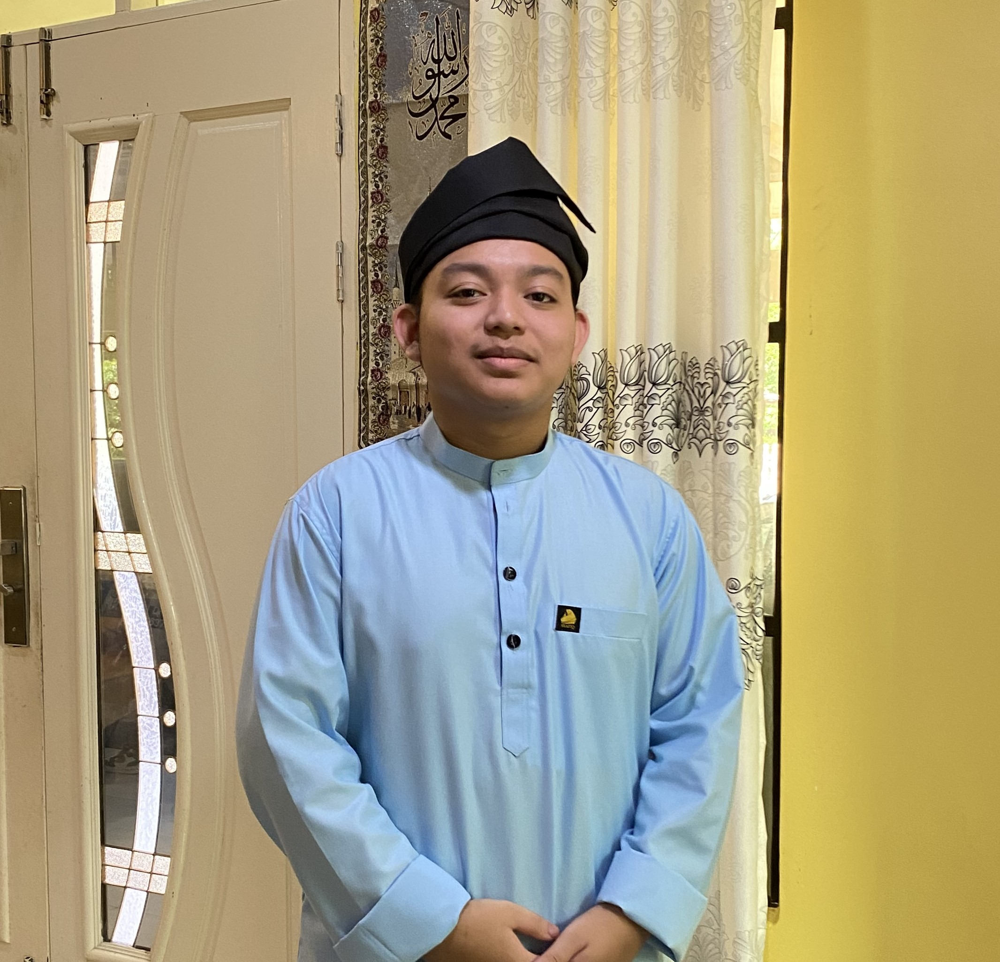

Affif Student of Faculty Computing UTM
Innovating the Future, One Code at a Time,
While Exploring the Digital Frontier.
Profile
MUHAMMAD AFFIF FARHAN BIN ZAMZURI

Affif, Student of Faculty Computing UTM
Network and Cyber Security Enthusiast | Aspiring Web Developer
I am a dedicated student at UTM pursuing a degree in Network and Cyber Security. Passionate about web programming, I am constantly learning and seeking opportunities to expand my skills in cybersecurity and web development.
Core
Education: Bachelor of Network and Cyber Security, University of Technology Malaysia
(UTM)
Position: Student
Skills: Network Security, Cybersecurity, HTML, CSS, JavaScript, PHP, MySQL
Recommended
Courses: Advanced Network Security, Web Development, Database Management
Certificates: Cisco Certified Network Associate (CCNA), Certified Ethical Hacker
(CEH)
Additional
Projects:
- Website Development Project: Developed a personal website using HTML and CSS Grid layout.
- GitHub E-Portfolio: Created an e-portfolio showcasing my projects and skills using GitHub.
- Campus Safety Alert System: Developed a web-based system for managing safety alerts on campus.
Portfolio
Welcome to my ePortfolio! I am MUHAMMAD AFFIF FARHAN a dedicated student at the University of Technology Malaysia (UTM), currently pursuing a degree in Network and Cybersecurity. My academic journey has equipped me with a solid foundation in securing and managing network infrastructures. Additionally, I am expanding my skills in web programming, exploring the latest technologies to create responsive and secure web applications. Through this portfolio, I aim to showcase my projects, skills, and the continuous growth in my technical expertise. Join me as I navigate the dynamic world of technology, pushing boundaries and innovating for a secure digital future.
Reflections for Each Assignment and Project
Assignment 1: Report
Gained: Enhanced understanding of network security theories, improved research and
analytical skills.
Improvement:Incorporate more real-world case studies in future reports.
Reflection: This assignment deepened my knowledge of network security principles
and improved my
ability to analyze complex information.
Assignment 2: Website
Gained: Learned how to create a responsive and visually appealing webpage using
HTML and CSS Grid layout.
Improvement: Explore advanced CSS frameworks and JavaScript libraries for more
dynamic features.
Reflection: This assignment improved my web development skills and understanding of
responsive design, allowing me to create a user-friendly and aesthetically pleasing website.
Assignment 3: GitHub E-portfolio
Gained: Developed skills in version control and project management using GitHub,
presenting my projects professionally.
Improvement: Continuously update my e-portfolio with new projects and skills,
improving design and navigation.
Reflection: This assignment emphasized the importance of maintaining a professional
online presence and effectively showcasing my work.
Project
Gained: Enhanced problem-solving skills and practical application of theoretical
knowledge in a real-world setting.
Improvement: More rigorous testing and validation, seeking feedback from industry
professionals.
Reflection: This project provided valuable experience in teamwork and project
management, highlighting the importance of thorough testing and continuous improvement.
About Me
From a young age, I was captivated by technology and its potential to transform our world. This curiosity led me to UTM, where I have been honing my skills in protecting and optimizing network systems. My coursework and hands-on projects have provided me with a robust understanding of network security protocols, threat mitigation strategies, and ethical hacking practices.